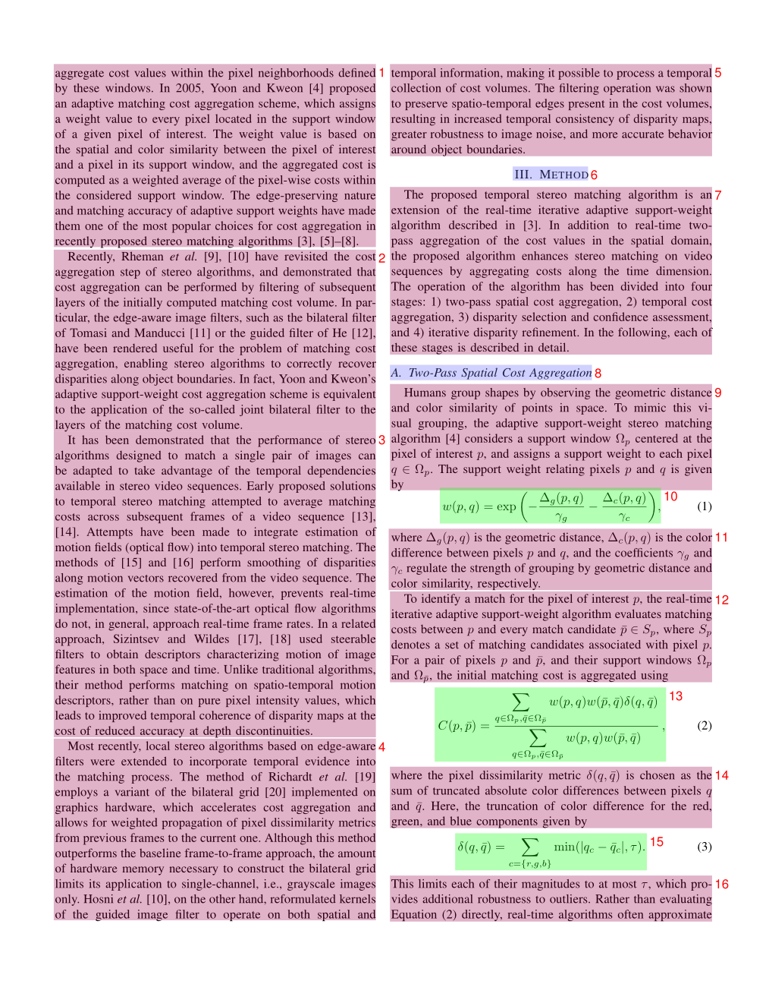

MinerU Output Files Documentation
Overview
After executing the mineru command, in addition to the main markdown file output, multiple auxiliary files are generated for debugging, quality inspection, and further processing. These files include:
- Visual debugging files: Help users intuitively understand the document parsing process and results
- Structured data files: Contain detailed parsing data for secondary development
The following sections provide detailed descriptions of each file's purpose and format.
Visual Debugging Files
Layout Analysis File (layout.pdf)
File naming format: {original_filename}_layout.pdf
Functionality:
- Visualizes layout analysis results for each page
- Numbers in the top-right corner of each detection box indicate reading order
- Different background colors distinguish different types of content blocks
Use cases:
- Check if layout analysis is correct
- Verify if reading order is reasonable
- Debug layout-related issues

Text Spans File (span.pdf)
Note
Only applicable to pipeline backend
File naming format: {original_filename}_span.pdf
Functionality:
- Uses different colored line boxes to annotate page content based on span type
- Used for quality inspection and issue troubleshooting
Use cases:
- Quickly troubleshoot text loss issues
- Check inline formula recognition
- Verify text segmentation accuracy

Structured Data Files
Important
The VLM backend output has significant changes in version 2.5 and is not backward-compatible with the pipeline backend. If you plan to build secondary development on structured outputs, please read this document carefully.
Pipeline Backend Output Results
Model Inference Results (model.json)
File naming format: {original_filename}_model.json
Data Structure Definition
from pydantic import BaseModel, Field
from enum import IntEnum
class CategoryType(IntEnum):
"""Content category enumeration"""
title = 0 # Title
plain_text = 1 # Text
abandon = 2 # Including headers, footers, page numbers, and page annotations
figure = 3 # Image
figure_caption = 4 # Image caption
table = 5 # Table
table_caption = 6 # Table caption
table_footnote = 7 # Table footnote
isolate_formula = 8 # Interline formula
formula_caption = 9 # Interline formula number
embedding = 13 # Inline formula
isolated = 14 # Interline formula
text = 15 # OCR recognition result
class PageInfo(BaseModel):
"""Page information"""
page_no: int = Field(description="Page number, first page is 0", ge=0)
height: int = Field(description="Page height", gt=0)
width: int = Field(description="Page width", ge=0)
class ObjectInferenceResult(BaseModel):
"""Object recognition result"""
category_id: CategoryType = Field(description="Category", ge=0)
poly: list[float] = Field(description="Quadrilateral coordinates, format: [x0,y0,x1,y1,x2,y2,x3,y3]")
score: float = Field(description="Confidence score of inference result")
latex: str | None = Field(description="LaTeX parsing result", default=None)
html: str | None = Field(description="HTML parsing result", default=None)
class PageInferenceResults(BaseModel):
"""Page inference results"""
layout_dets: list[ObjectInferenceResult] = Field(description="Page recognition results")
page_info: PageInfo = Field(description="Page metadata")
# Complete inference results
inference_result: list[PageInferenceResults] = []
Coordinate System Description
poly coordinate format: [x0, y0, x1, y1, x2, y2, x3, y3]
- Represents coordinates of top-left, top-right, bottom-right, bottom-left points respectively
- Coordinate origin is at the top-left corner of the page

Sample Data
[
{
"layout_dets": [
{
"category_id": 2,
"poly": [
99.1906967163086,
100.3119125366211,
730.3707885742188,
100.3119125366211,
730.3707885742188,
245.81326293945312,
99.1906967163086,
245.81326293945312
],
"score": 0.9999997615814209
}
],
"page_info": {
"page_no": 0,
"height": 2339,
"width": 1654
}
},
{
"layout_dets": [
{
"category_id": 5,
"poly": [
99.13092803955078,
2210.680419921875,
497.3183898925781,
2210.680419921875,
497.3183898925781,
2264.78076171875,
99.13092803955078,
2264.78076171875
],
"score": 0.9999997019767761
}
],
"page_info": {
"page_no": 1,
"height": 2339,
"width": 1654
}
}
]
Intermediate Processing Results (middle.json)
File naming format: {original_filename}_middle.json
Top-level Structure
| Field Name | Type | Description |
|---|---|---|
pdf_info |
list[dict] |
Array of parsing results for each page |
_backend |
string |
Parsing mode: pipeline or vlm |
_version_name |
string |
MinerU version number |
Page Information Structure (pdf_info)
| Field Name | Description |
|---|---|
preproc_blocks |
Unsegmented intermediate results after PDF preprocessing |
page_idx |
Page number, starting from 0 |
page_size |
Page width and height [width, height] |
images |
Image block information list |
tables |
Table block information list |
interline_equations |
Interline formula block information list |
discarded_blocks |
Block information to be discarded |
para_blocks |
Content block results after segmentation |
Block Structure Hierarchy
Level 1 blocks (table | image)
└── Level 2 blocks
└── Lines
└── Spans
Level 1 Block Fields
| Field Name | Description |
|---|---|
type |
Block type: table or image |
bbox |
Rectangular box coordinates of the block [x0, y0, x1, y1] |
blocks |
List of contained level 2 blocks |
Level 2 Block Fields
| Field Name | Description |
|---|---|
type |
Block type (see table below) |
bbox |
Rectangular box coordinates of the block |
lines |
List of contained line information |
Level 2 Block Types
| Type | Description |
|---|---|
image_body |
Image body |
image_caption |
Image caption text |
image_footnote |
Image footnote |
table_body |
Table body |
table_caption |
Table caption text |
table_footnote |
Table footnote |
text |
Text block |
title |
Title block |
index |
Index block |
list |
List block |
interline_equation |
Interline formula block |
Line and Span Structure
Line fields:
- bbox: Rectangular box coordinates of the line
- spans: List of contained spans
Span fields:
- bbox: Rectangular box coordinates of the span
- type: Span type (image, table, text, inline_equation, interline_equation)
- content | img_path: Text content or image path
Sample Data
{
"pdf_info": [
{
"preproc_blocks": [
{
"type": "text",
"bbox": [
52,
61.956024169921875,
294,
82.99800872802734
],
"lines": [
{
"bbox": [
52,
61.956024169921875,
294,
72.0000228881836
],
"spans": [
{
"bbox": [
54.0,
61.956024169921875,
296.2261657714844,
72.0000228881836
],
"content": "dependent on the service headway and the reliability of the departure ",
"type": "text",
"score": 1.0
}
]
}
]
}
],
"layout_bboxes": [
{
"layout_bbox": [
52,
61,
294,
731
],
"layout_label": "V",
"sub_layout": []
}
],
"page_idx": 0,
"page_size": [
612.0,
792.0
],
"_layout_tree": [],
"images": [],
"tables": [],
"interline_equations": [],
"discarded_blocks": [],
"para_blocks": [
{
"type": "text",
"bbox": [
52,
61.956024169921875,
294,
82.99800872802734
],
"lines": [
{
"bbox": [
52,
61.956024169921875,
294,
72.0000228881836
],
"spans": [
{
"bbox": [
54.0,
61.956024169921875,
296.2261657714844,
72.0000228881836
],
"content": "dependent on the service headway and the reliability of the departure ",
"type": "text",
"score": 1.0
}
]
}
]
}
]
}
],
"_backend": "pipeline",
"_version_name": "0.6.1"
}
Content List (content_list.json)
File naming format: {original_filename}_content_list.json
Functionality
This is a simplified version of middle.json that stores all readable content blocks in reading order as a flat structure, removing complex layout information for easier subsequent processing.
Content Types
| Type | Description |
|---|---|
image |
Image |
table |
Table |
text |
Text/Title |
equation |
Interline formula |
Text Level Identification
Text levels are distinguished through the text_level field:
- No
text_levelortext_level: 0: Body text text_level: 1: Level 1 headingtext_level: 2: Level 2 heading- And so on...
Common Fields
- All content blocks include a
page_idxfield indicating the page number (starting from 0). - All content blocks include a
bboxfield representing the bounding box coordinates of the content block[x0, y0, x1, y1], mapped to a range of 0-1000.
Sample Data
[
{
"type": "text",
"text": "The response of flow duration curves to afforestation ",
"text_level": 1,
"bbox": [
62,
480,
946,
904
],
"page_idx": 0
},
{
"type": "image",
"img_path": "images/a8ecda1c69b27e4f79fce1589175a9d721cbdc1cf78b4cc06a015f3746f6b9d8.jpg",
"image_caption": [
"Fig. 1. Annual flow duration curves of daily flows from Pine Creek, Australia, 1989–2000. "
],
"image_footnote": [],
"bbox": [
62,
480,
946,
904
],
"page_idx": 1
},
{
"type": "equation",
"img_path": "images/181ea56ef185060d04bf4e274685f3e072e922e7b839f093d482c29bf89b71e8.jpg",
"text": "$$\nQ _ { \\% } = f ( P ) + g ( T )\n$$",
"text_format": "latex",
"bbox": [
62,
480,
946,
904
],
"page_idx": 2
},
{
"type": "table",
"img_path": "images/e3cb413394a475e555807ffdad913435940ec637873d673ee1b039e3bc3496d0.jpg",
"table_caption": [
"Table 2 Significance of the rainfall and time terms "
],
"table_footnote": [
"indicates that the rainfall term was significant at the $5 \\%$ level, $T$ indicates that the time term was significant at the $5 \\%$ level, \\* represents significance at the $10 \\%$ level, and na denotes too few data points for meaningful analysis. "
],
"table_body": "<html><body><table><tr><td rowspan=\"2\">Site</td><td colspan=\"10\">Percentile</td></tr><tr><td>10</td><td>20</td><td>30</td><td>40</td><td>50</td><td>60</td><td>70</td><td>80</td><td>90</td><td>100</td></tr><tr><td>Traralgon Ck</td><td>P</td><td>P,*</td><td>P</td><td>P</td><td>P,</td><td>P,</td><td>P,</td><td>P,</td><td>P</td><td>P</td></tr><tr><td>Redhill</td><td>P,T</td><td>P,T</td><td>，*</td><td>**</td><td>P.T</td><td>P,*</td><td>P*</td><td>P*</td><td>*</td><td>，*</td></tr><tr><td>Pine Ck</td><td></td><td>P,T</td><td>P,T</td><td>P,T</td><td>P,T</td><td>T</td><td>T</td><td>T</td><td>na</td><td>na</td></tr><tr><td>Stewarts Ck 5</td><td>P,T</td><td>P,T</td><td>P,T</td><td>P,T</td><td>P.T</td><td>P.T</td><td>P,T</td><td>na</td><td>na</td><td>na</td></tr><tr><td>Glendhu 2</td><td>P</td><td>P,T</td><td>P,*</td><td>P,T</td><td>P.T</td><td>P,ns</td><td>P,T</td><td>P,T</td><td>P,T</td><td>P,T</td></tr><tr><td>Cathedral Peak 2</td><td>P,T</td><td>P,T</td><td>P,T</td><td>P,T</td><td>P,T</td><td>*,T</td><td>P,T</td><td>P,T</td><td>P,T</td><td>T</td></tr><tr><td>Cathedral Peak 3</td><td>P.T</td><td>P.T</td><td>P,T</td><td>P,T</td><td>P,T</td><td>T</td><td>P,T</td><td>P,T</td><td>P,T</td><td>T</td></tr><tr><td>Lambrechtsbos A</td><td>P,T</td><td>P</td><td>P</td><td>P,T</td><td>*,T</td><td>*,T</td><td>*,T</td><td>*,T</td><td>*,T</td><td>T</td></tr><tr><td>Lambrechtsbos B</td><td>P,T</td><td>P,T</td><td>P,T</td><td>P,T</td><td>P,T</td><td>P,T</td><td>P,T</td><td>P,T</td><td>T</td><td>T</td></tr><tr><td>Biesievlei</td><td>P,T</td><td>P.T</td><td>P,T</td><td>P,T</td><td>*,T</td><td>*,T</td><td>T</td><td>T</td><td>P,T</td><td>P,T</td></tr></table></body></html>",
"bbox": [
62,
480,
946,
904
],
"page_idx": 5
}
]
VLM Backend Output Results
Model Inference Results (model.json)
File naming format: {original_filename}_model.json
File format description
- Two-level nested list: outer list = pages; inner list = content blocks of that page
- Each block is a dict with at least:
type,bbox,angle,content(some types add extra fields likescore,block_tags,content_tags,format) - Designed for direct, raw model inspection
Supported content types (type field values)
{
"text": "Plain text",
"title": "Title",
"equation": "Display (interline) formula",
"image": "Image",
"image_caption": "Image caption",
"image_footnote": "Image footnote",
"table": "Table",
"table_caption": "Table caption",
"table_footnote": "Table footnote",
"phonetic": "Phonetic annotation",
"code": "Code block",
"code_caption": "Code caption",
"ref_text": "Reference / citation entry",
"algorithm": "Algorithm block (treated as code subtype)",
"list": "List container",
"header": "Page header",
"footer": "Page footer",
"page_number": "Page number",
"aside_text": "Side / margin note",
"page_footnote": "Page footnote"
}
Coordinate system
bbox=[x0, y0, x1, y1](top-left, bottom-right)- Origin at top-left of the page
- All coordinates are normalized percentages in
[0,1]
Sample data
[
[
{
"type": "header",
"bbox": [0.077, 0.095, 0.18, 0.181],
"angle": 0,
"score": null,
"block_tags": null,
"content": "ELSEVIER",
"format": null,
"content_tags": null
},
{
"type": "title",
"bbox": [0.157, 0.228, 0.833, 0.253],
"angle": 0,
"score": null,
"block_tags": null,
"content": "The response of flow duration curves to afforestation",
"format": null,
"content_tags": null
}
]
]
Intermediate Processing Results (middle.json)
File naming format: {original_filename}_middle.json
Structure is broadly similar to the pipeline backend, but with these differences:
listbecomes a second‑level block, a new fieldsub_typedistinguishes list categories:text: ordinary listref_text: reference / bibliography style list
- New
codeblock type withsub_type(a code block always has at least acode_body, it may optionally have acode_caption):codealgorithm
discarded_blocksmay contain additional types:headerfooterpage_numberaside_textpage_footnote
- All blocks include an
anglefield indicating rotation (one of0, 90, 180, 270).
Examples
-
Example: list block
{ "bbox": [174,155,818,333], "type": "list", "angle": 0, "index": 11, "blocks": [ { "bbox": [174,157,311,175], "type": "text", "angle": 0, "lines": [ { "bbox": [174,157,311,175], "spans": [ { "bbox": [174,157,311,175], "type": "text", "content": "H.1 Introduction" } ] } ], "index": 3 }, { "bbox": [175,182,464,229], "type": "text", "angle": 0, "lines": [ { "bbox": [175,182,464,229], "spans": [ { "bbox": [175,182,464,229], "type": "text", "content": "H.2 Example: Divide by Zero without Exception Handling" } ] } ], "index": 4 } ], "sub_type": "text" } -
Example: code block with optional caption:
{ "type": "code", "bbox": [114,780,885,1231], "blocks": [ { "bbox": [114,780,885,1231], "lines": [ { "bbox": [114,780,885,1231], "spans": [ { "bbox": [114,780,885,1231], "type": "text", "content": "1 // Fig. H.1: DivideByZeroNoExceptionHandling.java \n2 // Integer division without exception handling. \n3 import java.util.Scanner; \n4 \n5 public class DivideByZeroNoExceptionHandling \n6 { \n7 // demonstrates throwing an exception when a divide-by-zero occurs \n8 public static int quotient( int numerator, int denominator ) \n9 { \n10 return numerator / denominator; // possible division by zero \n11 } // end method quotient \n12 \n13 public static void main(String[] args) \n14 { \n15 Scanner scanner = new Scanner(System.in); // scanner for input \n16 \n17 System.out.print(\"Please enter an integer numerator: \"); \n18 int numerator = scanner.nextInt(); \n19 System.out.print(\"Please enter an integer denominator: \"); \n20 int denominator = scanner.nextInt(); \n21" } ] } ], "index": 17, "angle": 0, "type": "code_body" }, { "bbox": [867,160,1280,189], "lines": [ { "bbox": [867,160,1280,189], "spans": [ { "bbox": [867,160,1280,189], "type": "text", "content": "Algorithm 1 Modules for MCTSteg" } ] } ], "index": 19, "angle": 0, "type": "code_caption" } ], "index": 17, "sub_type": "code" }
Content List (content_list.json)
File naming format: {original_filename}_content_list.json
Based on the pipeline format, with these VLM-specific extensions:
- New
codetype withsub_type(code|algorithm):- Fields:
code_body(string), optionalcode_caption(list of strings)
- Fields:
- New
listtype withsub_type(text|ref_text):- Field:
list_items(array of strings)
- Field:
- All
discarded_blocksentries are also output (e.g., headers, footers, page numbers, margin notes, page footnotes). - Existing types (
image,table,text,equation) remain unchanged. bboxstill uses the 0–1000 normalized coordinate mapping.
Examples
Example: code (algorithm) entry
{
"type": "code",
"sub_type": "algorithm",
"code_caption": ["Algorithm 1 Modules for MCTSteg"],
"code_body": "1: function GETCOORDINATE(d) \n2: $x \\gets d / l$ , $y \\gets d$ mod $l$ \n3: return $(x, y)$ \n4: end function \n5: function BESTCHILD(v) \n6: $C \\gets$ child set of $v$ \n7: $v' \\gets \\arg \\max_{c \\in C} \\mathrm{UCTScore}(c)$ \n8: $v'.n \\gets v'.n + 1$ \n9: return $v'$ \n10: end function \n11: function BACK PROPAGATE(v) \n12: Calculate $R$ using Equation 11 \n13: while $v$ is not a root node do \n14: $v.r \\gets v.r + R$ , $v \\gets v.p$ \n15: end while \n16: end function \n17: function RANDOMSEARCH(v) \n18: while $v$ is not a leaf node do \n19: Randomly select an untried action $a \\in A(v)$ \n20: Create a new node $v'$ \n21: $(x, y) \\gets \\mathrm{GETCOORDINATE}(v'.d)$ \n22: $v'.p \\gets v$ , $v'.d \\gets v.d + 1$ , $v'.\\Gamma \\gets v.\\Gamma$ \n23: $v'.\\gamma_{x,y} \\gets a$ \n24: if $a = -1$ then \n25: $v.lc \\gets v'$ \n26: else if $a = 0$ then \n27: $v.mc \\gets v'$ \n28: else \n29: $v.rc \\gets v'$ \n30: end if \n31: $v \\gets v'$ \n32: end while \n33: return $v$ \n34: end function \n35: function SEARCH(v) \n36: while $v$ is fully expanded do \n37: $v \\gets$ BESTCHILD(v) \n38: end while \n39: if $v$ is not a leaf node then \n40: $v \\gets$ RANDOMSEARCH(v) \n41: end if \n42: return $v$ \n43: end function",
"bbox": [510,87,881,740],
"page_idx": 0
}
Example: list (text) entry
{
"type": "list",
"sub_type": "text",
"list_items": [
"H.1 Introduction",
"H.2 Example: Divide by Zero without Exception Handling",
"H.3 Example: Divide by Zero with Exception Handling",
"H.4 Summary"
],
"bbox": [174,155,818,333],
"page_idx": 0
}
Example: discarded blocks output
[
{
"type": "header",
"text": "Journal of Hydrology 310 (2005) 253-265",
"bbox": [363,164,623,177],
"page_idx": 0
},
{
"type": "page_footnote",
"text": "* Corresponding author. Address: Forest Science Centre, Department of Sustainability and Environment, P.O. Box 137, Heidelberg, Vic. 3084, Australia. Tel.: +61 3 9450 8719; fax: +61 3 9450 8644.",
"bbox": [71,815,915,841],
"page_idx": 0
}
]
Summary
The above files constitute MinerU's complete output results. Users can choose appropriate files for subsequent processing based on their needs:
-
Model outputs (Use raw outputs):
- model.json
-
Debugging and verification (Use visualization files):
- layout.pdf
- span.pdf
-
Content extraction: (Use simplified files):
- *.md
- content_list.json
-
Secondary development: (Use structured files):
- middle.json